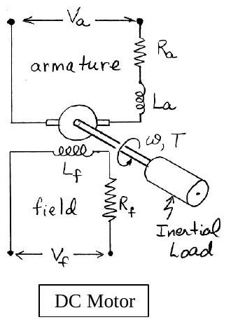
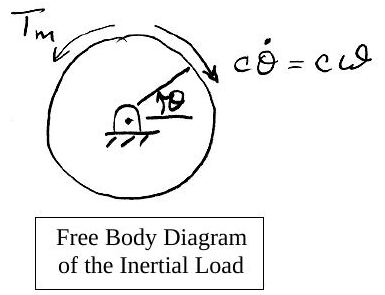
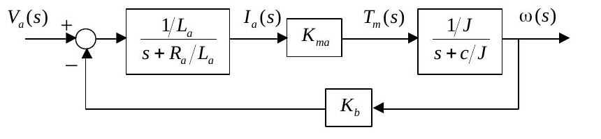

· EEM322
EEM322 Denetim Sistemleri: DC Motor Transfer Fonksiyonları (ME 360 ders notu, Kamman, 2001)
EEM322 – Denetim Sistemleri · 10.09.2001 · 16.10.2026
Bu yazı, EEM322 Denetim Sistemleri dersinin klasöründe "DCmotor_model_lecture2.pdf" adıyla duran, üçüncü taraf bir ders notudur. Belgenin kendisinde yazar ya da kurum adı yok; PDF özelliklerine göre başlığı "Me360DCMotorTransferFunctions01", yazarı kamman'dır ve 10 Eylül 2001'de Word'den üretilmiştir; yani bir ME 360 dersi için hazırlanmış 4 sayfalık bir nottur. Notun kendi kaynağı olarak Dorf ve Bishop'un Modern Control Systems (9. baskı, Prentice-Hall, 2001) kitabı gösterilmiş. Dosya Dropbox'ta parolalıydı; parolası kaldırılmış kopyası yazının sonunda indirilebilir. İçerik İngilizce olduğundan özgün dille aktarıldı, formüller düz metne çevrildi.
Bu içerik üçüncü taraf bir kaynağa aittir; arşiv ve nostalji amacıyla kaynak belirtilerek paylaşılmıştır. Hak sahibinin talebi hâlinde kaldırılır.
DC Motor Transfer Functions
(Reference: Dorf and Bishop, Modern Control Systems, 9th Ed., Prentice-Hall, Inc. 2001)
The figure represents a DC motor attached to an inertial load. The voltages applied to the field and armature sides of the motor are represented by V_f and V_a. The resistances and inductances of the field and armature sides of the motor are represented by R_f, L_f, R_a and L_a. The torque generated by the motor is proportional to i_f and i_a, the currents in the field and armature sides of the motor:
T_m = K · i_f · i_a (1.1)

Field-current controlled motor
In a field-current controlled motor, the armature current i_a is held constant, and the field current is controlled through the field voltage V_f. In this case, the motor torque increases linearly with the field current:
T_m = K_mf · i_f
Taking Laplace transforms of both sides gives the transfer function from the input current to the resulting torque:
T_m(s) / I_f(s) = K_mf (1.2)
For the field side of the motor the voltage/current relationship is
V_f = V_R + V_L = R_f · i_f + L_f · (di_f/dt)
The transfer function from the input voltage to the resulting current is found by taking Laplace transforms of both sides of this equation:
I_f(s) / V_f(s) = (1/L_f) / (s + R_f/L_f) (1st order system) (1.3)
Combining equations (1.2) and (1.3) gives the transfer function from the input voltage to the resulting motor torque:
T_m(s)/V_f(s) = [T_m(s)/I_f(s)] · [I_f(s)/V_f(s)] = (K_mf/L_f) / (s + R_f/L_f) (1st order system) (1.4)
So, a step input in field voltage results in an exponential rise in the motor torque.
Rotational motion of the inertial load
An equation that describes the rotational motion of the inertial load is found by summing moments (counterclockwise positive):
ΣM = T_m − c·ω = J·ω̇, or J·ω̇ + c·ω = T_m

Thus, the transfer function from the input motor torque to rotational speed changes is
ω(s) / T_m(s) = (1/J) / (s + c/J) (1st order system) (1.5)
Combining equations (1.4) and (1.5) gives the transfer function from the input field voltage to the resulting speed change:
ω(s)/V_f(s) = [ω(s)/T_m(s)] · [T_m(s)/V_f(s)] = (K_mf/(L_f·J)) / [(s + c/J)(s + R_f/L_f)] (2nd order system) (1.6)
Finally, since ω = dθ/dt, the transfer function from input field voltage to the resulting rotational position change is
θ(s)/V_f(s) = [θ(s)/ω(s)] · [ω(s)/V_f(s)] = (K_mf/(L_f·J)) / [s(s + c/J)(s + R_f/L_f)] (3rd order system) (1.7)
Armature-current controlled motor
In an armature-current controlled motor, the field current i_f is held constant, and the armature current is controlled through the armature voltage V_a. In this case, the motor torque increases linearly with the armature current:
T_m = K_ma · i_a
The transfer function from the input armature current to the resulting motor torque is
T_m(s) / I_a(s) = K_ma (1.8)
The voltage/current relationship for the armature side of the motor is
V_a = V_R + V_L + V_b (1.9)
where V_b represents the "back EMF" induced by the rotation of the armature windings in a magnetic field. The back EMF is proportional to the speed ω, i.e. V_b(s) = K_b·ω(s). Taking Laplace transforms of equation (1.9) gives
V_a(s) − V_b(s) = (R_a + L_a·s)·I_a(s) (1.10)
or
V_a(s) − K_b·ω(s) = (R_a + L_a·s)·I_a(s) (1.11)
As before, the transfer function from the input motor torque to rotational speed changes is
ω(s) / T_m(s) = (1/J) / (s + c/J) (1st order system) (1.12)
Equations (1.8), (1.11) and (1.12) together can be represented by the closed loop block diagram below: V_a(s) enters a summing junction, passes through (1/L_a)/(s + R_a/L_a) to give I_a(s), through K_ma to give T_m(s), and through (1/J)/(s + c/J) to give ω(s); the back-EMF path K_b feeds ω(s) back negatively.

Block diagram reduction gives the transfer function from the input armature voltage to the resulting speed change:
ω(s)/V_a(s) = (K_ma/(L_a·J)) / [(s + R_a/L_a)(s + c/J) + K_b·K_ma/(L_a·J)] (2nd order system) (1.13)
The transfer function from the input armature voltage to the resulting angular position change is found by multiplying equation (1.13) by 1/s.
Kısa özet
| Denetim biçimi | Giriş → çıkış | Transfer fonksiyonu | Mertebe |
|---|---|---|---|
| Alan akımı kontrollü | V_f → T_m | (K_mf/L_f)/(s + R_f/L_f) | 1 |
| Alan akımı kontrollü | V_f → ω | (K_mf/(L_f J))/[(s + c/J)(s + R_f/L_f)] | 2 |
| Alan akımı kontrollü | V_f → θ | (K_mf/(L_f J))/[s(s + c/J)(s + R_f/L_f)] | 3 |
| Endüvi akımı kontrollü | V_a → ω | (K_ma/(L_a J))/[(s + R_a/L_a)(s + c/J) + K_b K_ma/(L_a J)] | 2 |
| Endüvi akımı kontrollü | V_a → θ | (1.13) × 1/s | 3 |
Alan kontrollü motorda geri besleme yoktur ve transfer fonksiyonu alt sistemlerin çarpımıdır; endüvi kontrollü motorda ise ters EMK doğal bir negatif geri besleme döngüsü oluşturur. (1.13) ifadesi, ileri yol G = (1/L_a)/(s + R_a/L_a) · K_ma · (1/J)/(s + c/J) ve geri besleme H = K_b ile G/(1 + GH) bağıntısından doğrudan elde edilir.